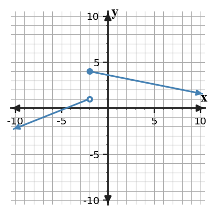

Limits from Graphs and Tables
Mathematical idea: A finite two-sided limit exists when the left-hand and right-hand limits both exist and have the same value.
You will read one-sided behavior from graphs and tables, decide when a two-sided limit exists, and use direction notation precisely.
Learning Target
Determine one-sided and two-sided limits from graphs and tables, including when a limit does not exist.
I can statements
- I can determine one-sided and two-sided limits from graphs and tables, including when a limit does not exist.
- I can compare graphical and numerical estimates of the same limit.
- I can use calculator-supported tables as a check on graphical reasoning.
Vocabulary
These are words and notation you will see in this section. Do not define them yet.
- left-hand limit
- right-hand limit
- two-sided limit
- DNE
Use the preview activity to decide which terms you already know, recognize, or do not know yet. Watch for these terms in bold when they are first meaningfully introduced or defined in the reading.
Preview: Skim Before You Read
Directions
Before reading closely, skim the vocabulary list and the section. Look at titles, headings, bold terms, equations, pictures, graphs, tables, diagrams, and other representations. Do not try to understand everything yet. Notice what already looks familiar and make predictions about what the section may explain.
Step 1 - Sort the vocabulary. Write each term in the column that best matches what you know right now. You may move a term later.
| Know for sure | Recognize | Don't know yet |
|---|---|---|
Step 2 - Skim the section. Record what catches your attention before you read closely.
| What I noticed | |
|---|---|
| What I predict | |
| What I wonder |
What's To Come
Directions
This is a long-range preview for future work. Do not solve it today. Read and annotate it. Mark what you already understand, what looks familiar, and what you think you will need to learn before you can complete the task.
The table records values of $g$ as $x$ approaches 0 from both sides.
| $x$ | -0.1 | -0.01 | -0.001 | 0.001 | 0.01 | 0.1 |
|---|---|---|---|---|---|---|
| $g(x)$ | -1.2 | -1.02 | -1.002 | 5.002 | 5.02 | 5.2 |
- Describe what the left side appears to approach.
- Describe what the right side appears to approach.
- Predict whether a two-sided limit should exist and identify the evidence that controls the decision.
- If $g(0)=3$, does that value settle the two-sided-limit question?
Teaching note: Teaching note: Do not solve the preview. Ask students to identify familiar notation/representations and name what information or methods they think they will need later.
Content: Read, Look, Annotate, Apply
Directions
Read in manageable chunks. Annotate the prose and the representations together: underline key relationships, circle or highlight new vocabulary, label important features, connect a sentence to an equation, table, graph, model, or diagram, and write brief questions or connections in the margins.
Reading 1: Direction Matters
A left-hand limit describes what happens when inputs approach a target through smaller values, while a right-hand limit uses larger values. The superscripts $-$ and $+$ in $\lim_{x\to a^-}f(x)$ and $\lim_{x\to a^+}f(x)$ record direction, not the sign of the answer.
On a graph, direction determines which branch you follow. To find a left-hand limit, begin just to the left of the target and trace toward it. To find a right-hand limit, begin just to the right. The actual point drawn at the target is still a separate issue.

Graph read: Approach $x=-2$ separately from the left and right. Record the two y-values before deciding whether a two-sided limit exists.
Tables represent direction by the input values they include. Numbers such as 1.9, 1.99, and 1.999 approach 2 from the left because they are less than 2. Numbers such as 2.1, 2.01, and 2.001 approach from the right because they are greater than 2.
One-sided limits are especially useful at jumps, endpoints, and piecewise boundaries. A graph can have perfectly clear behavior from each direction even when the two directions disagree. In that situation the one-sided limits can both exist while the two-sided limit does not.
Directional notation also prevents us from hiding important information. Writing only “near 2” can be ambiguous when a function behaves differently on the two sides. Writing $x\to2^-$ or $x\to2^+$ makes the source of the evidence explicit.
As you read a graph or table, decide the direction before reading the output. This small habit prevents the common mistake of combining rows from opposite sides too early.
$$\lim_{x\to a^-}f(x)=L_- \qquad \lim_{x\to a^+}f(x)=L_+$$
The minus sign means approach through smaller input values; the plus sign means approach through larger input values.
Stop and Discuss
- In the graph, what should you inspect first when asked for a left-hand limit?
- Why can both one-sided limits exist while the two-sided limit fails?
Expected discussion: 1. Follow only the branch for inputs smaller than the target.<br/>2. The one-sided limits can settle at different finite values.
Example 1: One-Sided Evidence
Use the table to analyze both sides of $x=0$.
| $x$ | -0.1 | -0.01 | -0.001 | 0.001 | 0.01 | 0.1 |
|---|---|---|---|---|---|---|
| $f(x)$ | -2.2 | -2.03 | -2.003 | 3.003 | 3.03 | 3.2 |
- Estimate $\lim_{x\to0^-}f(x)$.
- Estimate $\lim_{x\to0^+}f(x)$.
- Determine $\lim_{x\to0}f(x)$, if it exists, and justify the conclusion.
Teacher answer:
- $-2$.
- $3$.
- DNE because the one-sided limits are different.
You Try It 1: One-Sided Evidence
Use the table to analyze the behavior near $x=-1$.
| $x$ | -1.1 | -1.01 | -1.001 | -0.999 | -0.99 | -0.9 |
|---|---|---|---|---|---|---|
| $f(x)$ | -3.2 | -3.03 | -3.003 | -2.997 | -2.97 | -2.8 |
- Find the left-hand limit.
- Find the right-hand limit.
- Determine the two-sided limit and explain why it exists.
Teacher answer:
- $-3$.
- $-3$.
- $-3$ because both one-sided limits exist and are equal.
Reading 2: When a Two-Sided Limit Exists
A two-sided limit asks whether the function approaches one common output from both directions. The decisive test is simple in form but powerful in use: the left-hand limit and right-hand limit must both exist and must be equal.
If the left side approaches 4 and the right side approaches 4, then the two-sided limit is 4. If the left side approaches 4 and the right side approaches 9, then there is no single output describing both directions, so the two-sided limit is reported as DNE.
DNE does not mean “the function is undefined.” A function can be undefined at the target and still have a perfectly good two-sided limit if both sides approach the same value. Conversely, a function can be defined at the target and still have no two-sided limit if the directional behavior disagrees.
The phrase “both exist and are equal” matters. If one side grows without bound or oscillates without settling, a finite two-sided limit fails even if the other side behaves nicely. Later we will use infinite-limit notation to describe some of those unbounded cases more precisely.
Graphical and numerical evidence should tell the same directional story. A calculator table is not a replacement for reasoning; it is another representation that can confirm or challenge what the graph appears to show.
When the evidence conflicts, inspect the setup. Check whether the table sampled both sides, whether the graph scale is being read correctly, and whether the target point has been confused with nearby behavior.
A finite two-sided limit exists exactly when both one-sided limits exist and agree:
$$\lim_{x\to a}f(x)=L \quad\Longleftrightarrow\quad \lim_{x\to a^-}f(x)=L=\lim_{x\to a^+}f(x).$$If the one-sided limits disagree, report DNE.
Example 2: Graphical One-Sided Limits
Use the graph to compare one-sided behavior at $x=1$.

- Find $\lim_{x\to1^-}f(x)$.
- Find $\lim_{x\to1^+}f(x)$.
- Determine $\lim_{x\to1}f(x)$, if it exists.
- State the specific evidence that controls the answer to part (c).
Teacher answer:
- $2$.
- $-2$.
- DNE.
- The left-hand and right-hand limits are different.
You Try It 2: Graphical One-Sided Limits
A student reads only the entries with $x\lt2$ and reports the two-sided limit as 4.
| $x$ | 1.9 | 1.99 | 1.999 | 2.001 | 2.01 | 2.1 |
|---|---|---|---|---|---|---|
| $f(x)$ | 3.8 | 3.97 | 3.997 | 9.003 | 9.03 | 9.2 |
- Estimate the left-hand limit.
- Estimate the right-hand limit.
- Evaluate the student's conclusion and identify what evidence was ignored.
Teacher answer:
- $4$.
- $9$.
- The conclusion is incorrect. The student ignored the right-hand behavior, so the two-sided limit is DNE.
Reading 3: Numerical Evidence and Precision
Numerical limit estimates depend on choosing useful inputs. A row at $x=1$ tells very little about a limit as $x\to2$ compared with rows at 1.99 and 2.01. Closer inputs usually provide better local evidence, although calculator rounding can eventually become a practical limitation.
A symmetric table is often helpful: choose inputs at comparable distances on the left and right. For example, 1.9 and 2.1 are equally far from 2, as are 1.99 and 2.01. This makes disagreement between the sides easier to detect.
You should not expect the outputs to equal the limit exactly. If values are 5.97, 5.997, 6.003, and 6.03, the pattern supports a limit near 6. The goal is to identify the trend and use enough precision to make a defensible estimate.
When a table is generated by technology, verify that the inputs actually approach the target from the intended side. A calculator that steps across the target can mix one-sided behavior if the function has a jump.
Numerical evidence is strongest when it is interpreted alongside notation and, when available, a graph. The three representations should reinforce the same idea: direction of approach, output trend, and whether a common value is emerging.
- Separate inputs smaller than the target from inputs larger than the target.
- Read the output trend on each side independently.
- Compare the two one-sided conclusions before stating a two-sided limit.
Stop and Discuss
- What exact condition turns two one-sided limits into a two-sided limit?
- Why does a missing function value not automatically make the limit DNE?
Expected discussion: 1. Both one-sided limits must exist and be equal.<br/>2. The limit is determined by nearby behavior, not by the value at the target.
Example 3: When Two-Sided Limits Exist
For each case, determine the two-sided limit from the one-sided information.
- $\lim_{x\to3^-}f(x)=-2$ and $\lim_{x\to3^+}f(x)=1$.
- $\lim_{x\to4^-}g(x)=5$ and $\lim_{x\to4^+}g(x)=5$.
- $h(2)$ is undefined, but $\lim_{x\to2^-}h(x)=\lim_{x\to2^+}h(x)=7$.
Teacher answer:
- DNE because the one-sided limits differ.
- $5$ because the one-sided limits are equal.
- $7$. The function can be undefined at the point while the limit still exists.
You Try It 3: When Two-Sided Limits Exist
Use the one-sided information to decide each two-sided limit.
- $\lim_{x\to-1^-}p(x)=6$ and $\lim_{x\to-1^+}p(x)=6$.
- $\lim_{x\to5^-}q(x)=0$ and $\lim_{x\to5^+}q(x)=3$.
- $r(0)=12$, but $\lim_{x\to0^-}r(x)=\lim_{x\to0^+}r(x)=-4$.
Teacher answer:
- $6$.
- DNE.
- $-4$; the separate value $r(0)=12$ does not change the limit.
$a^-$ means “from the left” and $a^+$ means “from the right.” These superscripts name direction of approach; they do not mean the target value is negative or positive.
Example 4: One-Sided Notation
Write the correct one-sided limit notation for each description.
- $g(x)$ as $x$ approaches -2 from values greater than -2.
- $p(t)$ as $t$ approaches 1 from values less than 1.
- $R(s)$ as $s$ approaches 4 from the right.
- $H(x)$ as $x$ approaches 0 from the left.
Teacher answer:
- $\lim_{x\to-2^+}g(x)$.
- $\lim_{t\to1^-}p(t)$.
- $\lim_{s\to4^+}R(s)$.
- $\lim_{x\to0^-}H(x)$.
You Try It 4: One-Sided Notation
Translate each statement into one-sided limit notation.
- $f(x)$ as $x$ approaches 3 through values smaller than 3.
- $k(x)$ as $x$ approaches -5 through values larger than -5.
- $M(t)$ as $t$ approaches 2 from the left.
- $N(t)$ as $t$ approaches 7 from the right.
Teacher answer:
- $\lim_{x\to3^-}f(x)$.
- $\lim_{x\to-5^+}k(x)$.
- $\lim_{t\to2^-}M(t)$.
- $\lim_{t\to7^+}N(t)$.
Vocabulary: Define the Terms
You have now seen these terms in the reading, representations, and practice. Use this table to consolidate what each term means in this course.
| Term / notation | Definition / meaning |
|---|---|
| left-hand limit | the value approached by a function as the input approaches the target through smaller input values |
| right-hand limit | the value approached by a function as the input approaches the target through larger input values |
| two-sided limit | the common value approached from both directions, when the two one-sided limits agree |
| DNE | an abbreviation for “does not exist,” used when the required limiting behavior fails to settle on one value |
Summary
- Left-hand and right-hand limits isolate behavior from opposite directions.
- A two-sided limit exists only when both one-sided limits exist and are equal.
- The function may be undefined at the target and still have a limit.
- Tables must be read from both sides; graphs and numerical tables should support the same directional conclusion.
Teaching note: Suggested synthesis: connect the section learning target to the representations and decision rules students used. Emphasize precise notation and the most important misconception correction.
Common Mistakes
| Mistake | Why it is tempting | Check instead |
|---|---|---|
| Declaring DNE because the function is undefined at the point. | An undefined point looks like a break in the graph. | Inspect both one-sided limits before declaring DNE. |
| Ignoring disagreement between left- and right-hand limits. | One direction may look convincing by itself. | Compare both directions explicitly. |
| Reading a table from only one side of the input. | The shortcut seems plausible from one representation. | Return to the precise definition or condition that controls the conclusion. |
| Using only one side of a table. | Several rows may seem to form a clear pattern. | Separate left-hand and right-hand inputs before concluding a two-sided limit. |